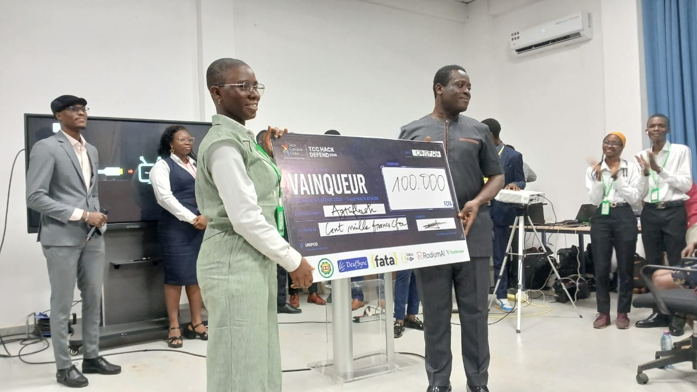
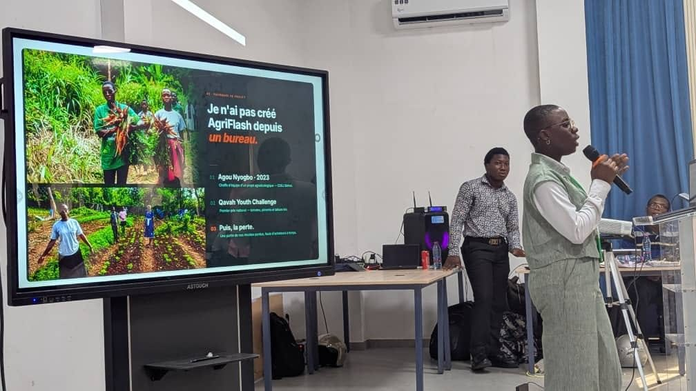
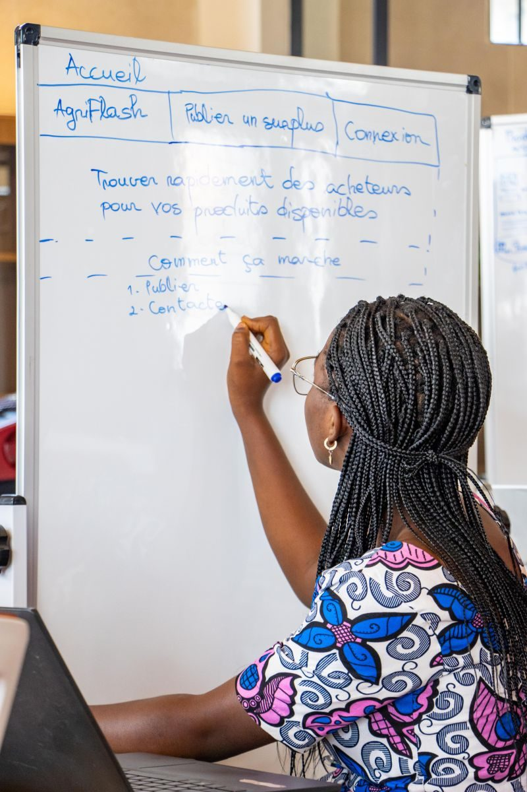

ÉTUDE DE CAS
AgriFlash
Une plateforme AgriTech pour connecter les producteurs aux acheteurs et réduire les pertes post-récolte.
Le problème
Les petits producteurs maraîchers perdent une partie de leurs récoltes faute d'acheteurs trouvés à temps. Les produits périssables se détériorent, et avec eux une partie des revenus des familles.
La solution
Le producteur publie sa récolte en moins d'une minute : produit, quantité, localisation, niveau d'urgence. L'acheteur trouve les offres sur une carte et le contacte directement sur WhatsApp.
Cible & proposition de valeur
- Petits producteurs maraîchers
- Acheteurs : ménages, restaurants, commerçants
- Moins de pertes, plus de revenus, des produits frais plus accessibles
Mon rôle
Fondatrice. J'ai porté AgriFlash seule depuis le début : recherche terrain, conception, développement, pitch, réseaux sociaux et modèle économique.
Démarche & évolution
- 2023 — au CDEJ Béthel, je vois des tomates, piments et salades se perdre faute d'acheteurs.
- 4 juillet 2026 — 1er prix au TCC Hack & Defend avec un prototype web.
- Août–octobre 2026 — programme Startup Loop · Innov'Up.
- Septembre 2026 — sélection NanaTech, construction du MVP.
- 3 octobre 2026 — module UX/UI NanaTech : parcours utilisateurs et architecture.
Prototype & choix techniques
- Prototype : HTML, CSS, JavaScript, Leaflet.js, Chart.js, GitHub Pages
- MVP : React, Node.js, Express, PostgreSQL
- Pensé pour le téléphone et les connexions faibles
AgriFlash, ce n'est pas qu'une plateforme : c'est un pont entre ceux qui produisent et ceux qui ont besoin de se nourrir.
En images



Prochaines étapes
Finaliser le MVP
Pitch final NanaTech le 31 octobre 2026.
Tester sur le terrain
Un producteur publie, un acheteur réel répond.
Lancer
Mise en ligne et communication auprès des premiers utilisateurs.